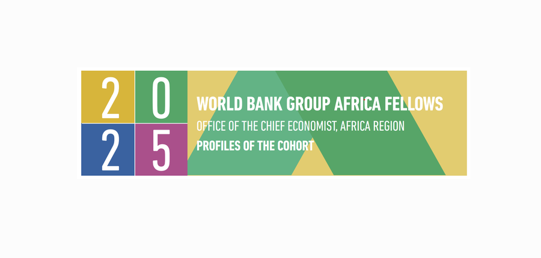

About
I work at the intersection of water science, climate resilience and spatial intelligence.
My work focuses on a practical question: how can better evidence lead to better water-investment decisions?
I currently support the World Bank Water Global Practice in Africa East, working across water security, WASH, irrigation, basin planning, climate resilience and digital monitoring in Kenya and Somalia.
My background spans hydrology, Earth observation, GIS, climate-risk analysis and water-resources planning. Doctoral research examined uncertainty in African hydrological evidence across 12 major river basins, while operational work increasingly focuses on translating that evidence into tools, investment priorities and decisions.
The thread connecting both is simple: turning complex water information into something people can act on.
Consultant · Water Global Practice, Africa East · Nairobi, Kenya
Where science meets operations
Research → practice
Research
Global models · reanalysis · Earth observation · hydrology · uncertainty
Practice
Investment planning · climate screening · basin planning · digital monitoring · government co-design
Better water decisions sit in the middle.
Recognition
World Bank Africa Fellow, 2025
